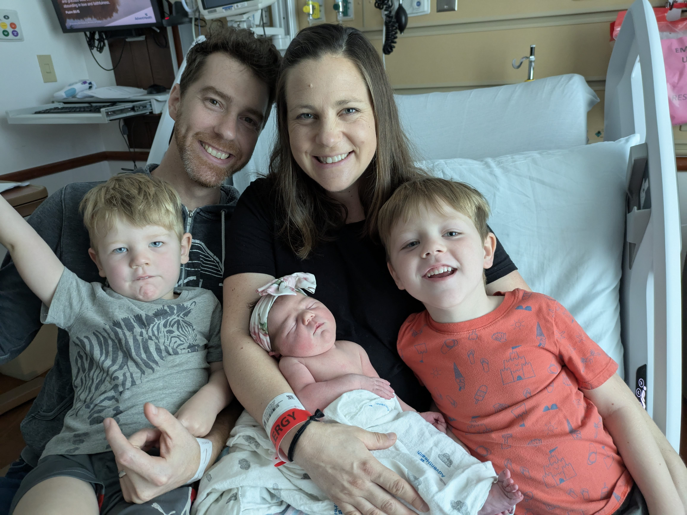

May 27, 2025
Dear Natalie and Jeremy,
I’m so glad to have met you through BSF this year! I loved hearing how God has been at work in your life, growing your love for Him in youth group and giving you courage to come to your first Bible study this year. As I shared, Cru is an organization committed to making an eternal difference in the lives of college students. The ministry’s objective is to give every student an opportunity to say “yes” to Jesus.
As a young child I made a decision to place my trust in Christ at the invitation of my mom, and grew up going to church. Once I got to college at the University of Wisconsin-Madison, I went looking for Cru and got plugged into a Bible study. During my junior and senior years, I led a Bible study for freshmen girls and really loved mentoring them and being a part of their lives. As a result of this experience, I began to consider working in ministry after graduation, which led me to joining the staff of Cru. I served with the inner city ministry of Cru for six years in Milwaukee, Wisconsin and then made the move down to Orlando to work at Cru’s headquarters in 2017.
Similarly, my husband Carl had placed his trust in Christ at a young age. It was through a summer mission with Cru that God showed him how the Gospel is for all of a Christian's life - not just salvation. In addition to seeing people come to Christ, he loves helping people see how the Gospel applies and gives freedom to their lives. For four years, Carl helped build spiritual movements on campuses in Buffalo, New York through evangelism and discipleship, before transferring to an operations role at Cru's headquarters in 2017. He now leads a team of business analysts and project managers to help improve some of the systems and processes that open doors for students to hear the Gospel.
Working with students at UW-Madison and at the University at Buffalo has been such a blessing in our lives. We’re grateful that the work we do now touches the lives of students all over the country and throughout the world. The college students of today will have a powerful impact on our communities in the future. They will be our children’s teachers, our business leaders, and our government officials. We are a part of what God is doing to change the lives of students by helping to win them to Christ, build them in their faith, and send them to reach the world.
Our role of reaching students for Christ has been possible through the ongoing partnership we have with a team that both prays and gives financially. We are currently expanding this team as we seek God to provide for our growing family. We would love for you to consider joining us.
Would you join us as a partner in ministry through a monthly investment of $200 or some other amount that God puts on your heart? Thank you so much for taking the time to read our letter. Carl and I are thrilled to be a part of this life changing ministry and look forward to sharing how God is at work.
Warmly,